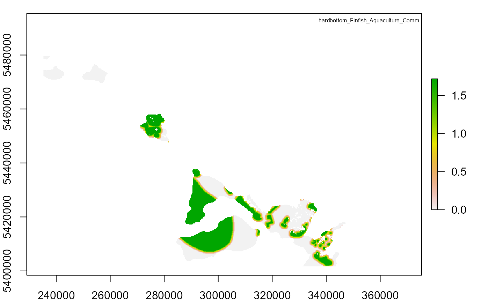
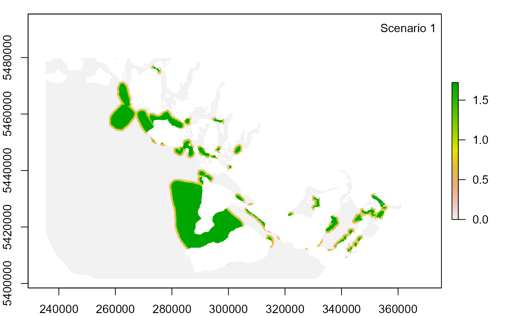

001_RunByRAinR.RmdThis vignette allows you to walk through an example of running ByRA (Bycatch Risk Assessment) in R. The example uses sample datasets from InVEST (Integrated Valuation of Ecosystem Services and Tradeoffs). The general workflow is:
You can download the HabitatRiskAssess.zip using R as well. This vignette download the data to a temporary directory.
# Set up working directory and download HabitatRiskAssess.zip data
temp_dir <- tempdir()
temp_file <- file.path(temp_dir, "HabitatRiskAssess.zip")
download.file("https://storage.googleapis.com/releases.naturalcapitalproject.org/invest/3.9.0/data/HabitatRiskAssess.zip", temp_file)
unzip(temp_file, exdir = temp_dir)To print out working directory, you can
print(temp_dir).
# Install following R packages
# install.packages(c("jsonlite", "raster", "rgdal"))
library(jsonlite)
library(raster)
#> Loading required package: sp
library(rgdal)
#> Please note that rgdal will be retired by the end of 2023,
#> plan transition to sf/stars/terra functions using GDAL and PROJ
#> at your earliest convenience.
#>
#> rgdal: version: 1.5-27, (SVN revision 1148)
#> Geospatial Data Abstraction Library extensions to R successfully loaded
#> Loaded GDAL runtime: GDAL 3.2.1, released 2020/12/29
#> Path to GDAL shared files: C:/Users/bai.li/Documents/R/R-4.1.1/library/rgdal/gdal
#> GDAL binary built with GEOS: TRUE
#> Loaded PROJ runtime: Rel. 7.2.1, January 1st, 2021, [PJ_VERSION: 721]
#> Path to PROJ shared files: C:/Users/bai.li/Documents/R/R-4.1.1/library/rgdal/proj
#> PROJ CDN enabled: FALSE
#> Linking to sp version:1.4-5
#> To mute warnings of possible GDAL/OSR exportToProj4() degradation,
#> use options("rgdal_show_exportToProj4_warnings"="none") before loading sp or rgdal.
#> Overwritten PROJ_LIB was C:/Users/bai.li/Documents/R/R-4.1.1/library/rgdal/proj
# Set up working directory
working_dir <- file.path(temp_dir, "HabitatRiskAssess")
# Write a JSON file with inputs
json_list <- list(
args = list(
aoi_vector_path = file.path(working_dir, "Input", "subregions.shp"),
criteria_table_path = file.path(working_dir, "Input", "exposure_consequence_criteria.csv"),
decay_eq = "Linear",
info_table_path = file.path(working_dir, "Input", "habitat_stressor_info.csv"),
max_rating = "3",
resolution = "100",
results_suffix = "",
risk_eq = "Multiplicative",
visualize_outputs = "true"
),
invest_version = "3.9.0",
model_name = "natcap.invest.hra"
)
json_path <- file.path(working_dir, "byra_datastack.json")
jsonlite::write_json(json_list, path = json_path, auto_unbox = TRUE)
# Run ByRA with default example data
invest_path <- "C:/InVEST_3.9.0_x64/invest-3-x64/invest.exe"
shell(paste(invest_path, "run --headless --datastack", json_path, "--workspace", working_dir, "habitat_risk_assessment"))
# Plot output
output_dir <- file.path(working_dir, "intermediate_outputs")
risk_tifs <- c(
"RISK_hardbottom_Rec_Fishing.tif",
"RISK_softbottom_Rec_Fishing.tif"
)
legend_title <- c(
"hardbottom_Finfish_Aquaculture_Comm",
"softbottom_Rec_Fishing"
)
for (i in seq_along(risk_tifs)) {
par(mfrow = c(1, 1), mar = c(2, 2, 1, 1))
risk_raster <- raster(file.path(output_dir, risk_tifs[i]))
plot(risk_raster)
legend("topright", legend_title[i], cex = 0.5, bty = "n")
}
Null scenario from previous run: temporal overlap rating of Rec_fishing weight = 3 and temporal overlap rating of Rec_fishing DQ = 3
Modify temporal overlap rating of Rec_fishing in the exposure_consequence_criteria.csv and create two scenarios:
Scenario 1: change temporal overlap rating of Rec_fishing weight from 3 to 2
Scenario 2: change temporal overlap rating of Rec_fishing DQ from 3 to 2
Run multiple scenarios in R
Compare outputs from different scenarios
scenario_id <- c(1, 2) # Create scenario 1 and 2
criteria_row <- c(29, 29) # Modify the value in row 29 in scenario 1 and 2
criteria_col <- c(4, 3) # Modify the value in column 4 in scenario 1 and modify the value in column 3 in scenario 2
criteria_val <- c(2, 2) # Change null scenario weight value to 2 in scenario 1 and change null scenario DQ value to 2 in scenario 2
for (id in seq_along(scenario_id)) {
# Set up new working folder
scenario_dir <- file.path(working_dir, paste("S", scenario_id[id], sep = ""))
dir.create(scenario_dir)
# Copy input data from null scenario to new scenario
file.copy(file.path(working_dir, "Input"), scenario_dir, recursive = TRUE)
# Modify input values
ec_criteria <- read.csv(file.path(scenario_dir, "Input", "exposure_consequence_criteria.csv"), header = FALSE)
ec_criteria[criteria_row[id], criteria_col[id]] <- criteria_val[id]
write.csv(ec_criteria, file = file.path(scenario_dir, "Input", "exposure_consequence_criteria.csv"), row.names = F)
# Modify JSON file path arguments
file.copy(file.path(working_dir, "byra_datastack.json"), scenario_dir, recursive = TRUE)
json_path <- file.path(scenario_dir, "byra_datastack.json")
byra_json <- jsonlite::read_json(json_path)
byra_json$args$aoi_vector_path <- file.path(scenario_dir, "Input", "subregions.shp")
byra_json$args$criteria_table_path <- file.path(scenario_dir, "Input", "exposure_consequence_criteria.csv")
byra_json$args$info_table_path <- file.path(scenario_dir, "Input", "habitat_stressor_info.csv")
jsonlite::write_json(byra_json, path = json_path, auto_unbox = TRUE)
shell(paste(invest_path, "run --headless --datastack", json_path, "--workspace", scenario_dir, "habitat_risk_assessment"))
}
# Plot output
for (id in seq_along(scenario_id)) {
output_dir <- file.path(working_dir,
paste("S", scenario_id[id], sep = ""),
"intermediate_outputs")
risk_tif <- c("RISK_softbottom_Rec_Fishing.tif")
par(mfrow = c(1, 1), mar = c(2, 2, 1, 1))
risk_raster <- raster(file.path(output_dir, risk_tif))
plot(risk_raster)
legend("topright", paste("Scenario", id), bty = "n")
}